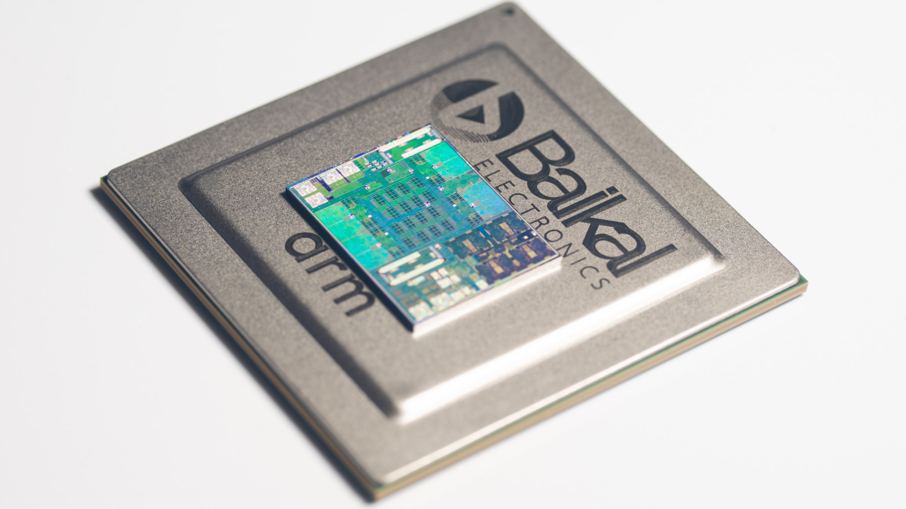

Сайт "Крутые штучки" представляет:
Интересные факты о цифровых достижениях России
GigaChat от Сбера
- Разработан компанией Sber в 2023 году.
- Общается на множестве языков, включая русский.
- Решает любые математические задачи быстро и точно.
- Поможет вам создать рассказы, написать программу или решить проблему.
- Всегда доступен онлайн, чтобы отвечать на ваши запросы.
- Постоянно изучает новые знания и умения.
- Люблит развлекательные задания и общение.
- Предоставляет точные и проверенные ответы на большинство вопросов.
Процессоры Baikal

- Процессоры Baikal разработаны компанией "Байкал Электроникс" и запущены в производство в 2015 году.
- Они предназначены для использования в серверах, коммуникационных системах, промышленной автоматике и бытовой электронике.
- Семейство Baikal включает несколько моделей: Baikal-T1, Baikal-M, Baikal-S и другие.
- Архитектура Baikal основана на лицензированных технологиях ARM, обеспечивающих низкую стоимость и высокое быстродействие.
- Процессоры поддерживают современные стандарты передачи данных, такие как USB, Gigabit Ethernet и PCI Express.
- Оборудование на базе Baikal используется в государственном секторе, науке, образовании и бизнесе.
- Одна из важных характеристик Baikal — высокая энергоэффективность, позволяющая экономить электроэнергию.
- Сегодня российские разработчики продолжают улучшать и развивать семейство процессоров Baikal, адаптируя их под растущие потребности рынка.